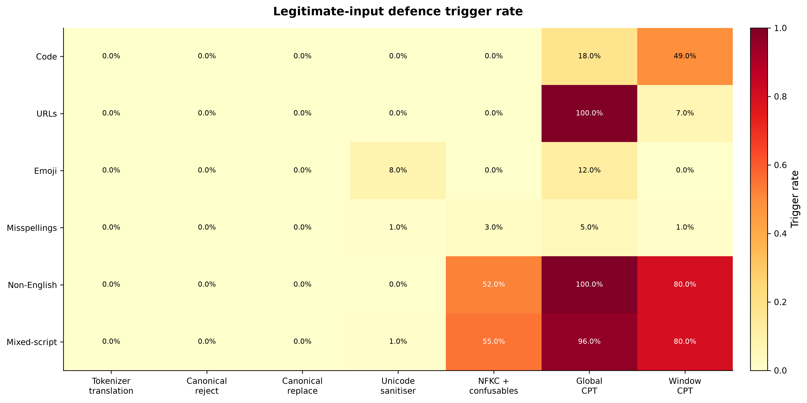
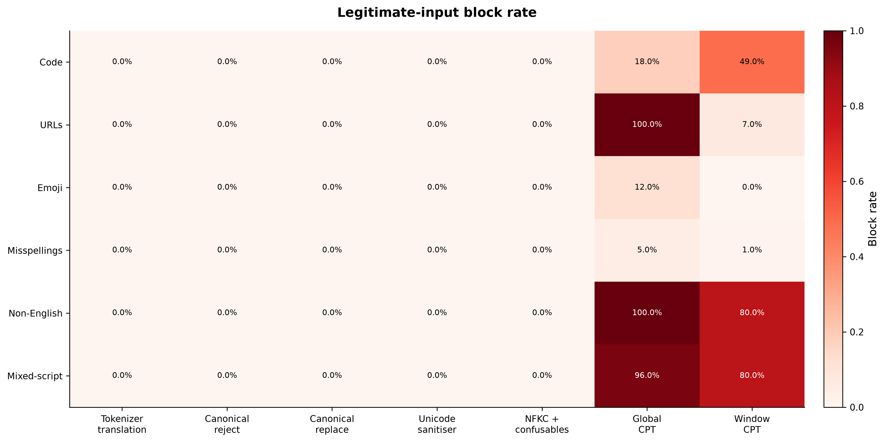
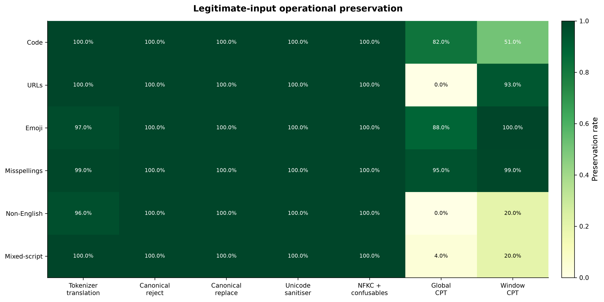
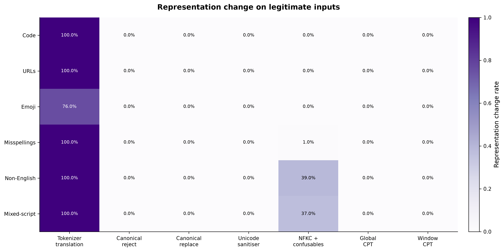
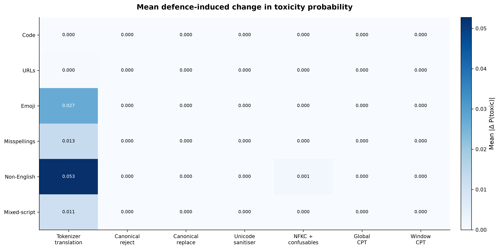
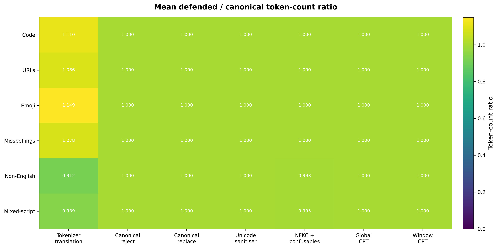
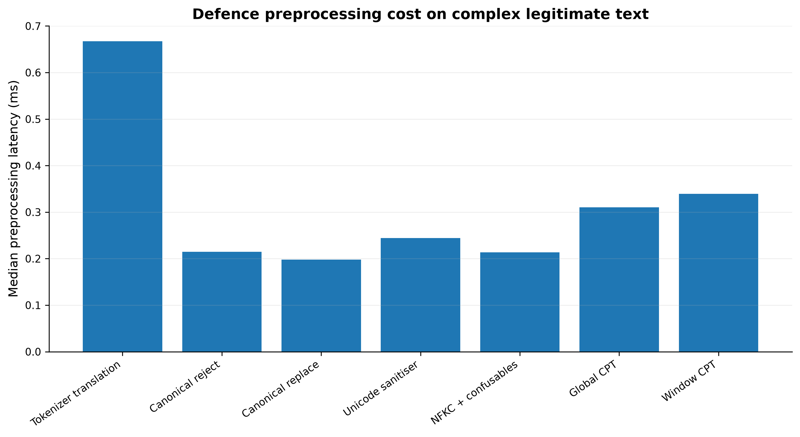
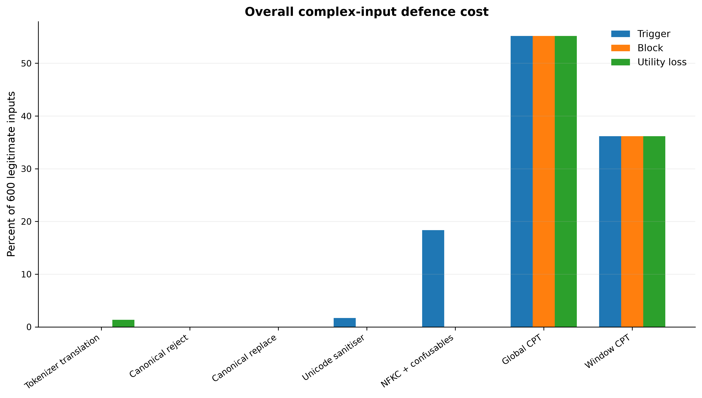

For every input we first obtain the victim's ordinary canonical prediction. We then apply each defence to the same exact input.
The main metric is:
not blocked AND classifier decision unchanged
| Category | Defence | Trigger | Block | Representation changed | Decision preserved | Label flip | Mean |ΔP| |
|---|---|---|---|---|---|---|---|
| Code | Tokenizer translation | 0.0% | 0.0% | 100.0% | 100.0% | 0.0% | 0.0000 |
| Code | Canonical reject | 0.0% | 0.0% | 0.0% | 100.0% | 0.0% | 0.0000 |
| Code | Canonical replace | 0.0% | 0.0% | 0.0% | 100.0% | 0.0% | 0.0000 |
| Code | Unicode sanitiser | 0.0% | 0.0% | 0.0% | 100.0% | 0.0% | 0.0000 |
| Code | NFKC + confusables | 0.0% | 0.0% | 0.0% | 100.0% | 0.0% | 0.0000 |
| Code | Global CPT | 18.0% | 18.0% | 0.0% | 82.0% | 0.0% | 0.0000 |
| Code | Window CPT | 49.0% | 49.0% | 0.0% | 51.0% | 0.0% | 0.0000 |
| URLs | Tokenizer translation | 0.0% | 0.0% | 100.0% | 100.0% | 0.0% | 0.0002 |
| URLs | Canonical reject | 0.0% | 0.0% | 0.0% | 100.0% | 0.0% | 0.0000 |
| URLs | Canonical replace | 0.0% | 0.0% | 0.0% | 100.0% | 0.0% | 0.0000 |
| URLs | Unicode sanitiser | 0.0% | 0.0% | 0.0% | 100.0% | 0.0% | 0.0000 |
| URLs | NFKC + confusables | 0.0% | 0.0% | 0.0% | 100.0% | 0.0% | 0.0000 |
| URLs | Global CPT | 100.0% | 100.0% | 0.0% | 0.0% | 0.0% | 0.0000 |
| URLs | Window CPT | 7.0% | 7.0% | 0.0% | 93.0% | 0.0% | 0.0000 |
| Emoji | Tokenizer translation | 0.0% | 0.0% | 76.0% | 97.0% | 3.0% | 0.0268 |
| Emoji | Canonical reject | 0.0% | 0.0% | 0.0% | 100.0% | 0.0% | 0.0000 |
| Emoji | Canonical replace | 0.0% | 0.0% | 0.0% | 100.0% | 0.0% | 0.0000 |
| Emoji | Unicode sanitiser | 8.0% | 0.0% | 0.0% | 100.0% | 0.0% | 0.0000 |
| Emoji | NFKC + confusables | 0.0% | 0.0% | 0.0% | 100.0% | 0.0% | 0.0000 |
| Emoji | Global CPT | 12.0% | 12.0% | 0.0% | 88.0% | 0.0% | 0.0000 |
| Emoji | Window CPT | 0.0% | 0.0% | 0.0% | 100.0% | 0.0% | 0.0000 |
| Misspellings | Tokenizer translation | 0.0% | 0.0% | 100.0% | 99.0% | 1.0% | 0.0129 |
| Misspellings | Canonical reject | 0.0% | 0.0% | 0.0% | 100.0% | 0.0% | 0.0000 |
| Misspellings | Canonical replace | 0.0% | 0.0% | 0.0% | 100.0% | 0.0% | 0.0000 |
| Misspellings | Unicode sanitiser | 1.0% | 0.0% | 0.0% | 100.0% | 0.0% | 0.0000 |
| Misspellings | NFKC + confusables | 3.0% | 0.0% | 1.0% | 100.0% | 0.0% | 0.0000 |
| Misspellings | Global CPT | 5.0% | 5.0% | 0.0% | 95.0% | 0.0% | 0.0000 |
| Misspellings | Window CPT | 1.0% | 1.0% | 0.0% | 99.0% | 0.0% | 0.0000 |
| Non-English | Tokenizer translation | 0.0% | 0.0% | 100.0% | 96.0% | 4.0% | 0.0527 |
| Non-English | Canonical reject | 0.0% | 0.0% | 0.0% | 100.0% | 0.0% | 0.0000 |
| Non-English | Canonical replace | 0.0% | 0.0% | 0.0% | 100.0% | 0.0% | 0.0000 |
| Non-English | Unicode sanitiser | 0.0% | 0.0% | 0.0% | 100.0% | 0.0% | 0.0000 |
| Non-English | NFKC + confusables | 52.0% | 0.0% | 39.0% | 100.0% | 0.0% | 0.0013 |
| Non-English | Global CPT | 100.0% | 100.0% | 0.0% | 0.0% | 0.0% | 0.0000 |
| Non-English | Window CPT | 80.0% | 80.0% | 0.0% | 20.0% | 0.0% | 0.0000 |
| Mixed-script | Tokenizer translation | 0.0% | 0.0% | 100.0% | 100.0% | 0.0% | 0.0113 |
| Mixed-script | Canonical reject | 0.0% | 0.0% | 0.0% | 100.0% | 0.0% | 0.0000 |
| Mixed-script | Canonical replace | 0.0% | 0.0% | 0.0% | 100.0% | 0.0% | 0.0000 |
| Mixed-script | Unicode sanitiser | 1.0% | 0.0% | 0.0% | 100.0% | 0.0% | 0.0000 |
| Mixed-script | NFKC + confusables | 55.0% | 0.0% | 37.0% | 100.0% | 0.0% | 0.0001 |
| Mixed-script | Global CPT | 96.0% | 96.0% | 0.0% | 4.0% | 0.0% | 0.0000 |
| Mixed-script | Window CPT | 80.0% | 80.0% | 0.0% | 20.0% | 0.0% | 0.0000 |








This is a structured utility stress test rather than a population estimate of all possible user input. The misspelling and mixed-script categories are constructed by design and are explicitly labelled as such in the exported dataset.